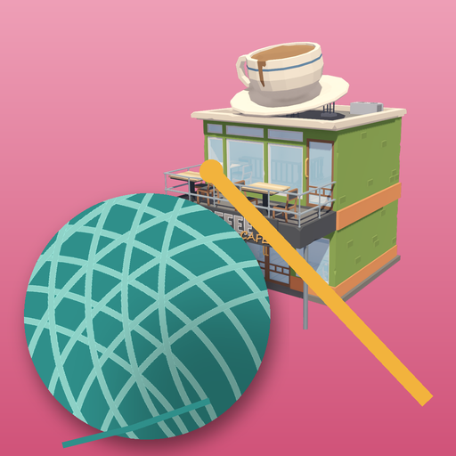

<- all projects

Stitch Trail
PC
Volume
Live
Solve the chart. Stitch the blanket. Save Nana's yarn cafe.
Nana Odile left you The Loop, a little yarn cafe on a rainy harbor street, and a box of blank crochet charts. Each chart is a picross puzzle: use the row and column numbers to fill cells, mark empties and reveal a hidden picture that turns into a full colour crochet blanket. Every chart can be solved by logic alone. 180 charts run from 5x5 to 15x15, with a Daily Chart, and the story spans six seasons as you save the cafe from a developer and uncover Nana's secret.